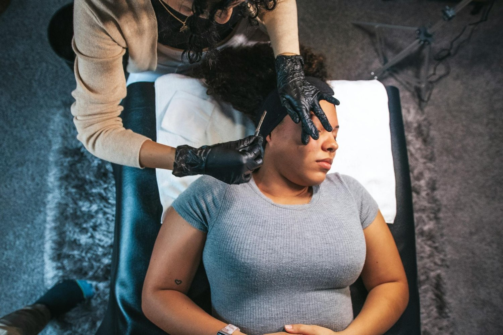

Face Off: A Dermaplane Facial Isn’t Shaving

Hadiyah Daché, licensed cosmetologist & esthetician
Facials & Treatments
4 min
← All articlesThe Book →Friendly reminder: this post contains affiliate links, which help support the Glowdega Archive. If you buy through them, I may earn a commission at no extra cost to you.
The dermaplane facial is the hot, buzzworthy facial treatment of the moment. But what makes it so special? And is it really just shaving your face? The truth is that the benefits of a dermaplane facial treatment go far beyond just shaving. It’s a precise, deep exfoliation method. But dermaplaning isn’t for everyone. Read on to learn more about dermaplane facials, when you should get one, who they are for and who should avoid them.
What is Dermaplaning?
It is not shaving. Dermaplaning refers to a mechanical exfoliation procedure performed by licensed skincare or medical professionals. The treatment is performed by using a sterile, surgical-grade scalpel held at a precise 45-degree angle to remove the stratum corneum (the uppermost layer of the epidermis) along with vellus hair (commonly called peach fuzz) without causing trauma to the living epidermis below. The procedure works through controlled abrasion of the skin's surface.
The removal of the stratum corneum, which typically contains 15-20 layers of dead keratinocytes, reduces the skin's barrier thickness by approximately 25-30 microns. Some clinical studies have shown that mechanical exfoliation of this type can increase cell turnover rate by 30-40% above baseline, with effects lasting 3-4 weeks before the stratum corneum fully regenerates. Additionally, the removal of vellus hair and dead skin cells has been demonstrated to enhance topical product penetration by up to 80% in some cases, making post-treatment skincare more effective.
The Ideal Face for Dermaplaning
Dermaplane facial treatments can be a game-changer for many skin types, particularly those dealing with dull skin or excessive peach fuzz. But for others with more noticeable skin conditions, a dermaplane facial might only make things worse. At Glowdega, we prefer to only dermaplane clients who do not have any raised blemishes, impaired barriers or chronic skin disorders such as eczema, rosacea, or lupus. The primary reason for this is because dermaplaning can risk further irritation and/or adverse reactions. We also do not dermaplane first-time clients for the same reasons.
The ideal client for a dermplane facial treatment is a returning client! Clients with dry or normal skin who want to achieve a smoother canvas for makeup application and those preparing for special events benefit the most as the immediate results can keep you camera-ready.
Dermaplane Dynamic Duos
A lot of potential clients interested in dermaplane facials think of the facial scraping only. But if you want better than ever results, you should really pair dermaplaning with another facial treatment. Below are a few popular combos we offer here at Glowdega.
Dermaplaning + Chemical Peels
The removal of the stratum corneum through dermaplaning creates an optimal environment for chemical peel penetration. Specifically, when the superficial layer of dead skin cells is removed, chemical peels can penetrate more uniformly and effectively. Clinical studies indicate that this combination can increase the peel's efficacy by 40-60% compared to a peel performed on unprepared skin.
For example, when combining dermaplaning with a glycolic acid peel (15-30% concentration), patients typically experience enhanced results including more noticeable improvement in hyperpigmentation, texture, and fine lines.
Dermaplaning + Hydrafacial
The Glowdega Gang favorite! This powerhouse combination works exceptionally well because dermaplaning's physical exfoliation complements the Hydrafacial's vacuum-based deep cleansing and serum infusion. After dermaplaning removes the superficial barriers, the Hydrafacial's vortex fusion technology can more effectively:
Extract debris from pores
Deliver hydrating serums deeper into the skin
Improve product absorption by up to 80%
The hydration and nourishment provided by the Hydrafacial helps calm any mild sensitivity from the dermaplaning while maximizing the skin's receptiveness to nutrients.
Dermaplaning + LED Light Therapy
LED therapy post-dermaplaning provides remarkable synergistic benefits. The removal of the stratum corneum allows the light waves to penetrate more effectively into the skin. Red LED light (630-700 nanometers) stimulates collagen production and reduces inflammation, while blue light (415-455 nanometers) targets and destroys acne-causing bacteria. When performed immediately after dermaplaning, LED therapy can help:
Accelerate healing response
Reduce potential redness
Enhance collagen stimulation
Provide antimicrobial benefits
Dermaplaning + Oxygen Infusion
Perhaps one of the most luxurious combinations, oxygen infusion treatments after dermaplaning deliver pressurized oxygen along with specialized serums into the newly exposed skin. The hyperbaric oxygen helps:
Drive active ingredients deeper into the skin
Enhance cellular metabolism
Accelerate healing
Provide immediate plumping and hydration
Clinical observations show that oxygen infusion post-dermaplaning can increase serum penetration by up to 90% compared to oxygen treatment alone, making this combination particularly effective for special events or when immediate results are desired.
Your Dermaplane Facial Routine
Here’s where esthetician opinions vary. Yes, you could technically get a dermaplane facial monthly but honestly that’s overkill for most. At minimum, you should look into getting a dermaplane facial once per quarter (every 3 months). And to really get glowing and maximize your results, look into getting a combination dermaplane treatment.
Book with us today! We include dermaplane options are available with both our GLOW and GLORY treatments.